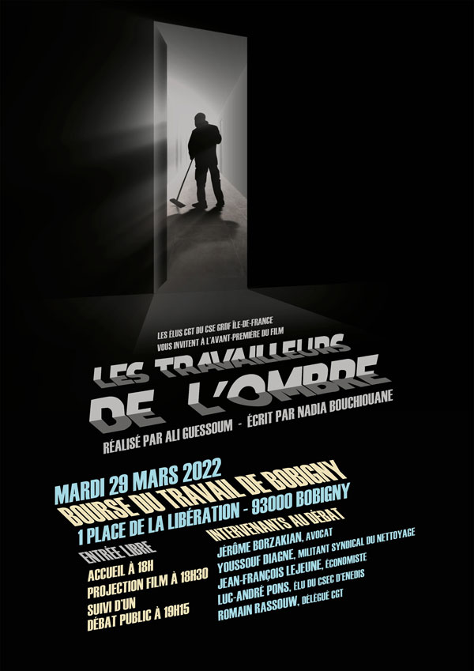

Les élus CGT du CSE GRDF Île-de-France vous invitent à découvrir en avant-premièrele film « Les Travailleurs de l’Ombre », le 29 mars 2022lors d’une soirée consacrée aux dérives de la sous-traitance.La projection sera suivie d’un temps d’échange où les invités mettront en perspective les différents témoignages et thèmes évoqués dans le film, sans oublier d’engager la conversation avec le public.Un moment de convivialité viendra clore la soirée. |
|  |
le film « Les Travailleurs de l’Ombre »Afin d’éclairer l’ensemble des énergéticiens sur les réalités d’une situation qui n’a que trop duré, les élus CGT du CSE GRDF Île-de-France vous proposent de plonger dans le monde des travailleurs invisibles, ceux du secteur du nettoyage. Depuis des années, les représentants du personnel de GRDF alertent leur direction des conséquences néfastes de la sous-traitance, en pure perte. Face à cet immobilisme, ils refusent de tolérer plus longtemps les « dommages collatéraux » sociaux et humains de la sous-traitance. Dans les IEG, des pans entiers d’activité sont désormais externalisés, au risque de perdre compétences et savoir-faire stratégiques. Déjà des questions de maîtrise, de méconnaissance du terrain et de sécurité se posent. Le recours massif à une sous-traitance devenue quasi-systématique dégrade, chaque jour un peu plus, le service public, les conditions de travail et pèse lourdement sur la facture des usagers comme les finances de l’État. Mais le coût n’est pas qu’économique, il est aussi humain…pour beaucoup, la sous-traitance devient maltraitance. On voit rarement ceux qui la subissent au quotidien, on les entend encore moins... Aujourd’hui, certains de ces travailleurs, les plus précaires et fragiles d’entre eux, prennent la parole. Les femmes et hommes de ménage sortent de l’ombre. Hier invisibles et demain ? Sortir des excès de la sous-traitance sera un long combat. Agents des IEG comme salariés d’entreprises prestataire, nous sommes tous concernés. Nous vous attendons nombreux pour en discuter le 29 mars 2022, à partir de 18 heures, à la Bourse du Travail de Bobigny. |